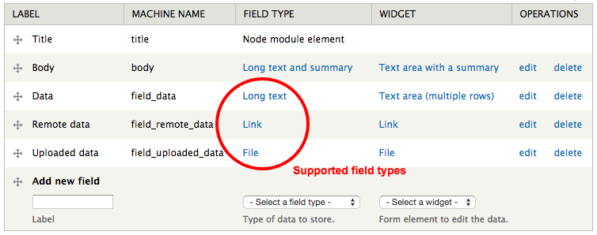
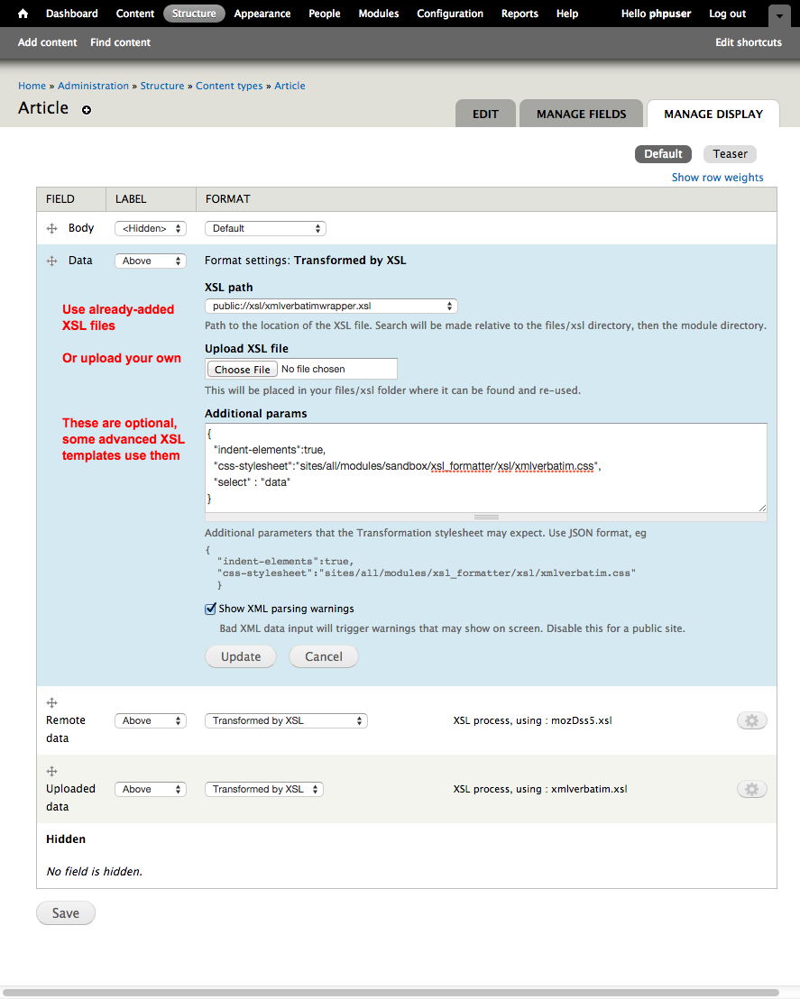

Some usage examples.
You will

Uploaded XSL files will be available for re-use in other fields.XML and XSL are very picky syntaxes, and it's easy for things to go wrong. Debugging info should be available in the Watchdog logs, with explanations of errors found during parsing.
Using the remote URL source for your data can be problematic.
A network request to the original is made on each pageload, and if the
target is slow or offline, your page will be also.!
The module uses the
DOMDocument::load
function directly, so all issues related to that apply.
No additional headers, proxy configs or authentication are supported here.
As this request happens in realtime (on render request) it can be terribly
inefficient if you display this field in a list of views or anything.
Drupal-level caching *may* help somewhat, but for performance
you are probably better to switch to using
Feeds module
(plus Feeds XPath
Parser)
to do your XML importing instead.